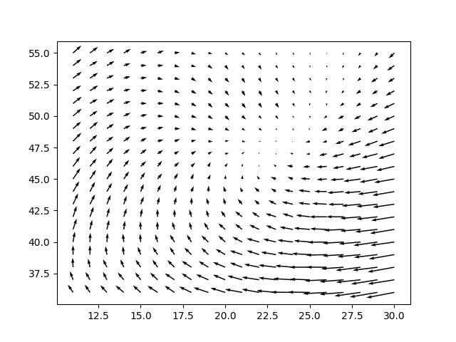

Vektör Alanları ve Hesaplar
Entegre Edilmiş Kinetik Enerji (Integrated Kinetic Enerji)
Bir kasırganın tahrip edici kuvveti nedir? Katrina, İvan, Ian gibi kasırgalar 1 ila 5 arası sayılar ile kategorize ediliyorlar. Bu sayılar Saffir-Simpson skalasıyla, ölçüm sistemiyle alakalı, bu sisteme göre fırtanın bir dakika içindeki en yüksek ani rüzgarı (gust) ölçülür, ve tüm fırtına bu ölçüme göre kategorize edilir [1].
Bu sayının problemi kasırgayı sadece varabildiği en yüksek rüzgar hızı üzerinden ölçmesi. Bu en yüksek hızın ölçülmesinin teknik olarak çıkarttığı problemler bir yana, bu sayı bize fırtınanın kapladığı alan ve bu alan içinde rüzgar şiddetinin nasıl dağıldığı hakkında hiçbir şey söylemiyor.
Camille ve Katrina örneklerini düşünelim, birincisinde şiddetli rüzgarlar var ama ufak alana odaklı, ikincisinin en yüksek rüzgar hızı daha az olmasına rağmen daha geniş alana yayılı ve SS skalasında daha küçük bir kasırga olarak geçiyor. Fakat Katrinanın çok daha zarar verici olduğunu biliyoruz.
Acaba daha iyi bir ölçüm olamaz mı? Kasırgalar tehlikelidir çünkü ittikleri, hareket ettirdikleri hava bloklarında kinetik enerji vardır. Daha az yoğun olsa da havanın bir kütlesi var, günlük hayatta fazla düşünmesek bile bu kütle yeteri kadar hiza ulaştığında etraftaki nesnelere çarpıp onları darmadığın edebiliyorlar, ağaçlar, binalar, ve bunu yaparken bir enerji transferi gerçekleştirmiş oluyorlar.
Bazı bilimciler bu sebeple SS skalası yerine İKE adlı bir hesabı tercih ediyorlar. Bu hesap
$$ IKE = \int_v \frac{1}{2} \rho U^2 dV $$
ile yapılır, $v$ hacim, $\rho$ yoğunluk, $U$ ise hızdır. Aslında burada yapılan standart $1/2 m v^2$ hesabının bir çeşidi (son $v$ hız, hacim değil). Üstteki formül enerji hesabını tüm rüzgar vektör alanı üzerinden entegre ediyor, yani sonsuz ufak alanların hızları üzerinden enerji hesaplayıp bunları topluyor, sayısal bağlamda elimizde sonlu sayıda kutular olacak, her kutu içindeki hava miktarını biliyoruz. Bu kutunun içindeki kütleyi referans alabiliriz, kütle hesabı için aslında tek alan hesabı yeterli olacak çünkü hava yoğunluğu olarak 1 $kg/m^3$ farzedeceğiz, kutu yüksekliği olarak 1 metre, böylece kutu alanı hesabı sonrası çarpı 1 $kg/m^3$ ve çarpı 1 metre ile aynı sayıdır, kütleyi direk alandan elde etmiş oluruz.
Her kutu içindeki rüzgar hızı yatay ve dikey bileşenleri $u,v$ ile gelecek, $hız = \sqrt{u^2+v^2}$ ile hız hesaplanabilir ya da, nasıl olsa hız karesi enerji için lazım, $u^2+v^2$ yeterli. 0.5 çarpı hız karesi çarpı üstte bahsedilen kütleyi çarpıp bunu kasırganın etkili olduğu coğrafyadaki tüm kutular için yapıp toplarsak kasırga İKE'sini elde etmiş oluruz
Katrina fırtınası İKE hesabı için NOAA kurumundan gerekli veriyi alabiliriz.
Script wdata.py içinde enlem 25 boylam -90 noktasında 2005 yılı
Eylül 30 tarihindeki 1400 x 1400 km büyüklüğündeki bir alanın rüzgar verisini
indirmek için gerekli kodlar var. Bu kodlar işletildi ve gerekli veri
'uwind.npz, 'vwind.npz içinde.
u_wind = np.load('uwind.npz')['arr_0']
v_wind = np.load('vwind.npz')['arr_0']
# ufak bir bolgeyi grafikle
xx,yy = np.meshgrid(np.linspace(1,59,59),np.linspace(1,60,60))
mi,mj = np.meshgrid(np.array(range(35,55,1)),np.array(range(10,30,1)))
plt.quiver(xx[mi,mj],yy[mi,mj],u_wind[mi,mj],v_wind[mi,mj])
plt.savefig('compscieng_xpp01vec_01.png')

Tüm veri üzerinden IKE hesabını yapalım şimdi,
gi,gj = u_wind.shape
cell_count = gi*gj
area = 2000*1e9 # m2, bu alani veriyi alirken tanimlamistik
cell_area = area / cell_count
wspeedsquare = u_wind**2+v_wind**2
wspeedsquare = wspeedsquare.reshape(-1)
wspeedsquare = wspeedsquare[wspeedsquare > 30.0]
IKE = np.sum(0.5*wspeedsquare*cell_area) / 1e12
print (np.round(IKE,2), 'terrajoule')
340.98 terrajoule
Bu enerji Camille fırtınasının enerjisinden daha fazladır.
Kaynaklar
[1] Wired, https://www.wired.com/2012/11/what-is-the-true-measure-of-a-storm
Yukarı